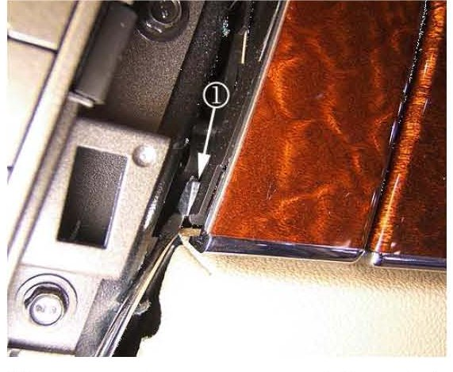

Interior - Upper I/P Storage Compartment Door Won't Open
TECHNICALBulletin No.: 08-08-49-007
Date: March 31, 2008
Subject:
Upper I/P Storage Compartment Door May Not Open (Reset Door Locking Pendulum)
Models:
2007-2008 Cadillac SRX
Attention:
This bulletin contains information which is intended for the Body Shop or Collision Repair Area as well as the Service and Parts Departments. Please make sure that this bulletin is properly distributed to all of the above departments.
Condition
Some customers may comment that the upper I/P storage compartment may not open when the release button is pressed. This condition may have arisen following recent service to the I/P or a front end collision.
Cause
The upper storage compartment is equipped with a locking pendulum for the latch mechanism. This pendulum is designed to lock the latch mechanism during a collision to prevent unintended opening of the compartment door. It is also possible to inadvertently activate the safety lock during storage compartment removal or other servicing of the I/P.
Correction
Remove the instrument panel center accessory trim panel and "reset" the storage compartment latch pendulum using the procedure below.

1. Remove the instrument panel center accessory trim panel. Refer to Instrument Panel Accessory Trim Plate Replacement in SI
2. Once you have removed the plate the upper I/P storage compartment locking pendulum (1) will be partially visible behind the I/P upper storage compartment door release button.

3. To release the lock pull the pendulum towards the rear of the vehicle. The simplest way is to take a small screwdriver behind the bare metal colored pendulum (as shown above) and pull it towards you. This will take very little effort.
Above is a picture of the pendulum (1) from the side in the unlocked position.
4. Confirm proper operation of the upper I/P storage compartment door.
5. Install the instrument panel center accessory trim panel.
Warranty Information
For vehicles repaired under warranty, use the table.

Disclaimer